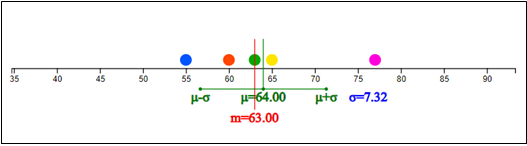
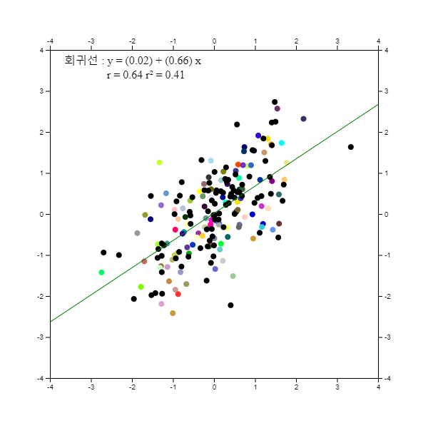
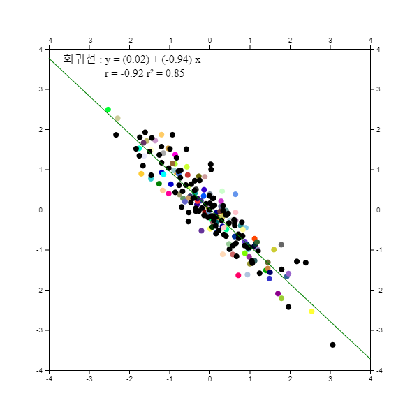

⭐ 생각열기 |
한 중학교 학생 5명을 표본 추출하여 몸무게를 조사한 자료가 다음과 같다.
(자료 4.1) 한 중학교 학생 5명 표본의 몸무게 (kg)
|
|
💎 탐구 |
1) 이 자료들을 대표할 수 있는 대푯값을 찾기위한 그래프는 어떠한 것이 있을까? |
4. 자료의 대푯값과 산포도
🎲 🎯 ⚖ μ σ ρ4.1 자료의 대푯값 – 평균 / 중앙값 |
양적 자료인 경우에 자료의 대푯값과 산포도를 측정하여 분석한다. - 자료의 대푯값 – 평균 / 중앙값 - 자료의 산포도 – 분산 / 표준편차 두 변량의 산점도를 그리고 상관계수를 측정한다. |
4.1 자료의 대푯값 – 평균 / 중앙값
이와 같은 5개의 몸무게 자료를 대표할 만한 값으로 많이 쓰이는 것이 평균이다. 평균은 모든 자료를 더한 후 이를 자료의 수로 나눈 것인데 자료의 무게중심을 의미한다. 평균은 \(\mu\)(뮤라 읽음)로 표시하는데 (자료 4.1)은 평균은 다음과 같이 구한다. $$ \text{평균} = \mu = \frac{63 + 60 + 65 + 55 + 77}{5} = \frac{320}{5} = 64 $$
\(n\)개의 표본 자료를 \(x_1 , x_2 , ... , x_n \)으로 표시하였을 때 평균은 다음과 같은 공식으로 나타낼 수 있다. $$ \small \mu = \frac{1}{n} \sum_{i=1}^n x_i $$
일반적으로 평균은 자료를 대표하는 값으로 매우 적절하지만 자료 중에 매우 큰 값이나 작은 값이 있을 때는 이 값에 영향을 많이 받는다. 이러한 경우 중앙값이 이용된다. 중앙값은 자료를 순서대로 정렬하였을 때 그 중앙에 있는 값을 의미한다. (자료 4.1)에서는 홀수인 5개의 자료가 있어 그 중앙인 3번째(\(\frac{n+1}{2}\)번째) 자료가 중앙값으로 다음과 같이 구한다.
(자료 4.1)을 오름차순으로 정렬한다.
\(\qquad\)55 60 63 65 77
중앙값은 오름차순으로 정리한 자료의 3번째 자료인 63이다.
만일 자료가 6개인 짝수인 경우 중앙값은 어떻게 구할까? 이 경우 자료의 중앙값은 정렬된 자료의 3번째(\(\frac{n}{2}\)번째)와 4번째(\(\frac{n+2}{2}\)번째)의 평균으로 계산한다.
일반적으로 중앙값은 \(m\)으로 표시하고 구하는 방법은 다음과 같다.
1) 자료를 오름차순으로 정렬한다.
2) 자료수가 홀수 개인지 짝수 개인지 확인한다.
3) 자료가 홀수 개이면 중앙값 \(m\) = (\(\frac{n+1}{2}\))번째 자료
자료가 짝수 개이면 중앙값 \(m\) = (\(\frac{n}{2}\))번째와 (\(\frac{n+2}{2}\))번째 자료의 평균
위와 같은 몸무게 자료의 전반적인 분포를 보기위해서는 앞에서 살펴본 줄기와 잎 그림이나 히스토그램을 생각할 수 있지만 자료를 대표하는 값을 살펴보기에는 점그래프가 적절하다. 점그래프는 자료의 최솟값과 최댓값을 구한 후 가로축 상에 이 값들을 먼저 표시하고, 각각의 자료를 최솟값과 최댓값에 비례한 위치를 계산하여 점으로 표시한 것이다.
<그림 4.1>은 (자료 4.1)에 대한 점그래프이다. 최솟값 55와 최댓값 76에 비례해서 각각의 자료를 동그란 점으로 표시한 것이다. 초록색 선이 평균 이고 빨강 선이 중앙값 이다. 이 자료에서는 평균이 중앙값보다 약간 우측에 위치해 있는데 그 이유는 자료 중에서 77이 나머지 네 개의 자료보다느 오른쪽에 위치해 있기 때문이다. 즉 평균은 중앙값보다 극단값에 민감하다.

<그림 4.1> 5명의 몸무게에 대한 점그래프
자료가 많을 경우 위와 같이 수작업으로 평균과 중앙값을 구하는 것은 시간도 많이 걸리고 쉽지 않다. 『eStat』소프트웨어를 이용하여 자료의 대푯값을 구해보자.
🎲 실습 4.1
『eStat』을 이용하여 (자료 4.1) 5명 학생들의 몸무게에 대한 점그래프를 그리고 평균 및 중앙값을 구해보자.풀이
|
왼쪽의 QR을 이용해 『eStatH』 메뉴에서 ‘점그래프 – 평균/표준편차’를 선택하면 <그림 4.2>와 같은 창이 나타난다. ‘자료 입력’에 학생들의 몸무게 자료를 입력한다. (전자책에서 자료를 복사하여 붙여넣기를 해도 됨) |

<그림 4.2> 점그래프를 위한 몸무게 자료 입력
자료를 입력하면 자료수, 최솟값, 최댓값, 평균, 중앙값 등이 계산된다. [실행] 버튼을 클릭하면 <그림 4.1>과 같은 점그래프가 나타나고 평균 및 중앙값이 표시된다.
<그림 4.1> 아래에는 <그림 4.3>과 같은 시뮬레이션 창이 나타난다. 이 시뮬레이션은 마우스로 한 점을 이동시켜 평균과 중앙값의 변화를 살펴보는 것이다. 예를 들어 제일 오른쪽의 점을 마우스로 끌어 오른쪽으로 이동하면 평균은 변하지만 중앙값은 변하지 않는다. 즉 중앙값은 극단점에 영향을 받지 않는다

<그림 4.3> 한 점의 변화에 따른 평균 / 중앙값 변화의 관찰 시뮬레이션
🎲 실습 4.2
『eStat』을 이용하여 우리나라의 2월 서울의 일별 최저기온([실습 3.2])을 조사한 (자료 3.2)에 대하여 평균 및 중앙값을 구해보자.
(자료 3.2) 2021년 2월 서울의 일별 최저기온 (섭씨 도) (기상청)
|
-2.3 -8.2 -9.4 -7.4 -4.4 4.3 -2.6 5.4 -6.1 -1.5
1.3 0.6 1.0 6.4 -5.2 -7.0 -10.4 -10.6 -7.1 5.5 4.7 0.4 -3.1 -3.0 0.7 0.5 4.3 3.2 |
풀이
|
왼쪽의 QR을 이용하여 나타나는『eStatH』 메뉴에서 ‘점그래프 – 평균 / 표준편차’를 선택하면 <그림 4.4>와 같은 자료 입력창이 나타난다. |

<그림 4.4> 점그래프의 자료입력 상자
자료 입력’에 일별 최저기온 자료를 입력하면 (전자책에서 자료를 복사하여 붙여넣기를 해도 됨) 즉시 <그림 4.4>와 같이 입력된 자료수 28, 평균 –1.79, 중앙값 –1.90, 최솟값 –10.6도, 최댓값이 6.4도임을 보여준다.
[실행] 버튼을 클릭하면 <그림 4.5>와 같은 점그래프가 나타나고 평균(\(\mu\)) 및 중앙값(\(m\))이 표시된다. 이 점그래프 아래에는 점을 마우스로 변화시키며 평균과 중앙값의 변화를 살펴볼수 있는 시뮬레이션창이 나타난다.

<그림 4.5> 일별 최저기온의 점그래프와 시뮬레이션창
⏱ 과제 4.1
|
다음은 2016년 현재 서울의 25개 행정구별 자전거 전용 도로 길이에 대한 자료이다. ([과제 3.1]). 『eStat』을 이용하여 점그래프와 자료의 대푯값을 구하고 분석하라.
(자료 3.3) 2019년 서울의 자전거 도로 (단위 km)
(서울통계정보시스템)
|
⏱ 과제 4.2
|
다음은 2020년 우리나라를 통과한 태풍의 최대 풍속에 대한 자료이다 ([과제 3.2]). 『eStat』을 이용하여 점그래프와 자료의 대푯값을 구하고 분석하라.
(자료 3.4) 2020년 우리나라를 통과한 태품의 최대풍속
(단위 m/초) (기상청)
|
도수분포표에서 평균구하기
⭐ 생각열기 |
다음과 같이 한 중학교 학급의 학력고사 성적의 도수분포표가 주어졌다고 하자.
[표 4.1] 중학교 학력고사 성적의 도수분포표
|
||||||||||||
💎 탐구 |
이 자료들을 대표할 수 있는 평균을 어떻게 구할까? |
원 자료가 아니라 도수분포표가 주어졌을 때 평균은 중간값을 이용해 근사적으로 다음과 같이 구할 수 있다.
먼저 각 계급의 중간값을 구한다. 그리고 각 계급에 도수만큼 중간값이 있다고 생각하고 이 근사 자료를 이용하여 평균을 구한다.
[표 4.2] 중간값을 이용한 중학교 학력고사 성적의 근사 자료
| 몸무게(kg) | 중간값 | 도수 | 근사자료 |
|---|---|---|---|
| 60이상 ~ 70미만 | 65 | 3 | 65 65 |
| 70 ~ 80 | 75 | 7 | 75 75 75 75 75 |
| 80 ~ 90 | 85 | 11 | 85 85 85 85 85 85 85 85 85 85 |
| 90 ~ 100 | 95 | 5 | 95 95 95 |
| 합계 | 30 |
즉, 평균은 다음과 같다. $$ \small \begin{align} \text{평균} &= \frac{65+65+75+75+75+75+75+85+85+85+85+85+85+85+85+85+85+95+95+95}{20} \\ &= \frac{65 \times 2 + 75 \times 5 + 85 \times 10 + 95 \times 3} {20} \\ &= \frac{1640}{20} = 82 \end{align} $$
『eStatH』의 ‘도수분포다각형 – 상대도수 비교’를 이용하면 도수분포표의 근사적인 평균을 <그림 4.6>과 같이 구할 수 있다. 계급구간의 왼쪽값과 도수1을 입력한 후 [실행] 버튼을 누르면 된다.

<그림 4.6> 도수분포표를 이용한 평균의 계산
4.2 자료의 산포도 - 표준편차
⭐ 생각열기 |
한 중학교 학생 5명의 퀴즈 성적(10점 만점)이 다음과 같다.
(자료 4.1) 한 중학교 학생 5명의 퀴즈 성적 (10점 만점)
|
|
💎 탐구 |
이 자료들이 흩어져 있는 정도를 측정하는 방법이 있을까? |
자료들이 흩어져 있는 정도를 산포도라 부른다. 산포도의 간단한 측정 방법은 최댓값에서 최솟값을 뺀 범위이다. $$ \text{범위} = \text{최댓값 - 최솟값} $$ (자료 4.1)에서 최댓값은 77이고 최소값은 55이므로 범위는 22이다. $$ \text{범위} = \text{77 - 55 = 22} $$
이러한 범위는 극단값에 너무 민감하기 때문에 산포도의 측정에는 일반적으로 분산 또는 표준편차를 많이 이용한다. 분산은 각 자료값과 평균과의 거리를 제곱하여 합을 구한 후 이를 자료의 수로 나눈 것이다. 따라서 자료가 평균을 중심으로 많이 흩어져 있으면 분산이 커지고, 자료가 평균주위에 몰려 있으면 분산이 작게 된다. 분산은 \(\sigma^2\)(시그마 제곱으로 읽음)으로 표시한다.
(자료 4.2)에서 평균은 다음과 같다. $$ \text{평균} \quad \mu ~=~ \frac{6+8+7++4+10}{5} ~=~ \frac{35}{5} ~=~ 7 $$
분산은 평균에서 각 측정값까지의 거리를 제곱하여 합을 구한 후 그 평균을 구한 것이다. 즉, 거리제곱의 평균이다. $$ \begin{align} \text{분산} \quad \sigma^{2} &~=~ \frac{ (6-7)^2 + (8-7)^2 + (7-7)^2 + (4-7)^2 + (10-7)^2} {5} \\ &~=~ \frac{20}{5} ~=~ 4 \end{align} $$ \(n\) 개의 자료를 \(x_1 , x_2 , ... , x_n\)으로 표시하고 평균을 \(\mu\)로 표시하였을 때 분산은 다음과 같은 공식으로 나타낼 수 있다. $$ \begin{align} \text{분산} \quad \sigma^{2} ~=~ { {1 \over n} {\sum _{i=1} ^{n} (x_{i} - \mu )^{2}} } ~~~~ (n:~자료수) \\ \end{align} $$
표준편차는 분산의 제곱근으로 정의하고 \(\sigma\)로 표시한다. 분산은 제곱거리의 평균이어서 현실적인 해석이 쉽지 않으나 표준편차는 분산의 제곱근이어서 각 값과 평균과의 평균거리의 측도로 해석이 가능하다. $$ \text{표준편차} \quad \sigma ~=~ \sqrt{\sigma^2} \\ $$ (자료 4.2)의 표본표준편차는 \(\sigma\) = \(\sqrt{\sigma^2}\) = \(\sqrt{4}\) = 2 이다.
🎲 실습 4.3
『eStat』을 이용하여 (자료 4.2) 5명 표본 학생들의 퀴즈 성적에 대한 점그래프를 그리고 평균 및 표준편차를 구해보자.풀이
|
왼쪽의 QR을 이용해 『eStatH』 메뉴에서 ‘점그래프 – 평균/표준편차’를 선택하면 <그림 4.7>과 같은 창이 나타난다. ‘자료 입력’에 학생들의 퀴즈성적 자료를 입력한다. (전자책에서 자료를 복사하여 붙여넣기를 해도 됨) |

<그림 4.7> 점그래프를 위한 퀴즈성적 자료 입력
자료를 입력하면 자료수, 최솟값, 최댓값, 평균, 중앙값 등이 계산된다. [실행] 버튼을 클릭하면 <그림 4.8>과 같은 점그래프가 나타나고 평균(\(\mu\)), 중앙값(\(m\)), 표준편차(\(\sigma\)), 그리고 \(\mu\) \(\pm\) \(\sigma\) 길이가 표시된다.
그림 아래에 있는 시뮬레이션 창을 이용하여 마우스로 한 점을 이동시키면서 표준편차 길이의 변화를 살펴볼 수 있다. 표준편차도 극단점에 영향을 받는다.

<그림 4.8> \(\mu\) \(\pm\) \(\sigma\)가 표시된 점그래프
🎲 실습 4.4
『eStat』을 이용하여 우리나라의 2월 서울의 일별 최저기온([실습 3.2])을 조사한 (자료 3.2)에 대하여 점그래프를 그리고 평균 및 표준편차를 구해보자.풀이
|
왼쪽의 QR을 이용하여 나타나는『eStatH』 메뉴에서 ‘점그래프 – 평균 / 표준편차’를 선택하면 <그림 4.9>와 같은 자료 입력창이 나타난다. |

<그림 4.9> 점그래프의 자료입력 상자
자료를 입력하면 자료수, 최솟값, 최댓값, 평균, 중앙값 등이 계산된다. [실행] 버튼을 클릭하면 <그림 4.10>과 같은 점그래프가 나타나고 평균(\(\mu\)), 중앙값(\(m\)), 표준편차(\(\sigma\)), 그리고 \(\mu\) \(\pm\) \(\sigma\) 길이가 표시된다.
그림 아래에 있는 시뮬레이션 창을 이용하여 마우스로 한 점을 이동시키면서 표준편차 길이의 변화를 살펴볼 수 있다. 표준편차도 극단점에 영향을 받는다.

<그림 4.10> 일별 최저기온의 점그래프와 시뮬레이션창
⏱ 과제 4.3
|
다음은 2016년 현재 서울의 25개 행정구별 자전거 전용 도로 길이에 대한 자료이다 ([과제 3.1]). 『eStat』을 이용하여 점그래프와 자료의 평균 및 표준편차를 구하고 분석하라.
(자료 3.3) 2019년 서울의 자전거 도로 (단위 km) (서울통계정보시스템)
|
⏱ 과제 4.4
|
다음은 2020년 우리나라를 통과한 태풍의 최대 풍속에 대한 자료이다 ([과제 3.2]). 『eStat』을 이용하여 점그래프와 자료의 평균 및 표준편차를 구하고 분석하라.
(자료 3.4) 2020년 우리나라를 통과한 태품의 최대풍속 (단위 m/초) (기상청)
|
도수분포표에서 표준편차 구하기
⭐ 생각열기 |
다음과 같이 한 중학교 학급의 학력고사 성적의 도수분포표가 주어졌다고 하자.
[표 4.3] 중학교 학력고사 성적의 도수분포표
|
||||||||||||
💎 탐구 |
이 자료들을 산포도로서 표준편차를 어떻게 구할까? |
앞 절에서 원 자료가 아니라 도수분포표가 주어졌을 때 평균을 중간값을 이용해 근사적으로 구하였다. 표준편차도 유사한 방법으로 구한다.
먼저 각 계급의 중간값을 구한다. 그리고 각 계급에 도수만큼 중간값이 있다고 생각하고 이 근사 자료를 이용하여 평균을 구한다.
[표 4.4] 중간값을 이용한 중학교 학력고사 성적의 근사 자료
| 몸무게(kg) | 중간값 | 도수 | 근사자료 |
|---|---|---|---|
| 60이상 ~ 70미만 | 65 | 3 | 65 65 |
| 70 ~ 80 | 75 | 7 | 75 75 75 75 75 |
| 80 ~ 90 | 85 | 11 | 85 85 85 85 85 85 85 85 85 85 |
| 90 ~ 100 | 95 | 5 | 95 95 95 |
| 합계 | 30 |
즉 평균은 다음과 같다. $$ \text{평균} ~=~ \frac{65 \times 2 + 75 \times 5 + 85 \times 10 + 95 \times 3} {20} ~=~ \frac{1640}{20} ~=~ 82 $$
분산과 표준편차도 유사한 방법으로 구한다. $$ \small \begin{align} &\text{분산} \qquad \qquad \sigma^2 ~=~ \frac{(65-82)^2 \times 2 + (75-82)^2 \times 5 + (85-82)^2 \times 10 + (95-82)^2 \times 3} {20} \\ &\qquad\qquad\qquad\quad ~=~ \frac{1420}{20} ~=~ 71 \\ &\text{표준편차} \qquad \sigma ~=~ \sqrt{\sigma^2} ~=~ \sqrt{71} ~=~ 8.43 \end{align} $$
『eStatH』의 ‘도수분포다각형 – 상대도수 비교’를 이용하면 도수분포표의 근사적인 평균과 표준편차를 <그림 4.11>과 같이 구할 수 있다. 계급구간의 왼쪽값과 도수1을 입력한 후 [실행] 버튼을 누르면 된다.
<그림 4.6> 도수분포표를 이용한 표준편차의 계산
4.3 산점도 - 상관계수
⭐ 생각열기 |
한 중학교 남학생 7명의 신장과 체중을 조사하였더니 다음과 같다.
(자료 4.3) 한 중학교 학생 7명의 신장(cm)과 제중(kg)
|
||||||||||||||||||||||||
💎 탐구 |
- 신장과 체중 두 변량의 상관관계를 살펴볼 수 있는 그래프가 있을까? |
이와 같이 두 변량을 측정한 자료는 산점도를 이용하여 두 변량의 관련성 등을 분석할 수 있다. 산점도는 한 변량의 값을 x축, 다른 변량의 값을 y축으로 하여 좌표평면위에 각각의 점을 표시한 것이다. 즉 (자료 4.2)를 순서쌍 (162, 54), (164, 60), ... (172, 67)로 <그림 4.12>와 같이 나타낸다.

<그림 4.12> 신장과 체중의 산점도
위의 그림을 보면 신장이 증가할수록 체중도 대개 증가함을 알 수 있다. 즉 산점도를 이용하면 신장과 체중 변량 사이의 관계를 잘 알 수 있다. 두 변량 x, y 사이에 x의 값이 증가함에 따라 y의 값이 증가하거나 감소하는 경향이 있을 때 두 변량 x, y사이에 상관관계가 있다고 한다. 상관관계는 여러 가지 종류가 있다.
1) 양의 상관관계 – 한 변량 x의 값이 증가함에 따리 y의 값이 대체적으로 증가하는 경향이 있을 때, 두 변량 사이에 양의 상관관계가 있다고 한다. 아버지의 키와 아들의 키는 대개 양의 상관관계를 갖는다. 만일 산점도의 점들이 한 직선에 가깝게 모여 있으면 양의 상관관계가 강하다 하고, 흩어져 있으면 양의 상관관계가 약하다고 한다.

<그림 4.13> 강한 양의 상관관계

<그림 4.14> 약한 양의 상관관계
2) 음의 상관관계 – 한 변량 x의 값이 증가함에 따리 y의 값이 대체적으로 감소하는 경향이 있을 때, 두 변량 사이에 음의 상관관계가 있다고 한다. 등산을 하면 산의 높이와 온도와의 관계는 음의 상관을 갖는다. 만일 산점도의 점들이 한 직선에 가깝게 모여 있으면 음의 상관관계가 강하다 하고, 흩어져 있으면 음의 상관관계가 약하다고 한다.

<그림 4.15> 강한 음의 상관관계
<그림 4.16> 약한 음의 상관관계
3) 상관관계 없음 – 한 변량 x의 값이 증가함에 따리 y의 값이 증가하거나 감소하는 경향이 분명하지 않을 때, 두 변량 사이에 상관관계가 없다고 한다.
<그림 4.17> 상관관계가 없는 경우
🎲 실습 4.5
『eStatH』를을 이용하여 (자료 4.3) 7명 학생들의 신장과 체중에 대한 산점도를 그려보자.풀이
|
왼쪽의 QR을 이용해 『eStatH』 메뉴에서 ‘산점도 – 상관계수’를 선택하면 <그림 4.18>과 같은 창이 나타난다. ‘X자료 입력’에 학생들의 신장을, ‘Y자료 입력’에 체중을 입력한다. (전자책에서 자료를 복사하여 붙여넣기를 해도 됨) |
<그림 4.18> 산점도를 위한 신장 체중 자료 입력
자료를 입력하고 [실행] 버튼을 클릭하면 자료수, 평균, 분산, 표준편차 그리고 공분산 및 상관계수가 계산되고 <그림 4.12>와 같은 산점도가 나타난다. 다.
산점도 아래의 ‘회귀선’을 체크하면 신장과 체중의 관계를 설명하는 회귀직선이 그려진다.
한 변량에서 산포도의 측도로 분산이 이용되듯이 두 변량에서는 다음과 같은 공분산이 이용된다. \(n\)개의 x, y 자료를 \( (x_1 , y_1 ), (x_2 , y_2 ), ... , (x_n , y_n ) \)으로 표시하고 평균을 \( (\mu_x , \mu_y )\)로 표시하였을 때 공분산 \(\sigma_{xy}\)는 다음과 같은 공식으로 나타낼 수 있다. $$ \text{공분산} \quad \sigma_{xy} ~ =~ \frac{1}{n} \sum _{i=1} ^{n} (x_{i} - \mu_x ) (y_{i} - u_y ) \qquad (n:\text{자료수} ) $$
공분산은 평면의 평균점 에서 각각의 점들사이의 x축거리와 y축 거리를 곱한값들의 전체 평균을 의미한다. 따라서 평균점을 중심으로 오른쪽 위와 왼쪽 아래에 점이 많으면 공분산은 양의 값을 가져 양의 상관관계를 알 수 있다. 평균점을 중심으로 왼쪽 위와 오른쪽 아래에 점이 많으면 공분산은 음의 값을 가져 음의 상관관계를 알 수 있다. 하지만 공분산은 자료의 단위에 따라 값이 많이 커질 수 있으므로 상관관계의 측도로는 다음과 같은 상관계수 \(\rho\)가 이용된다. $$ \text{상관계수} \quad \rho ~ =~ \frac{\sigma_{xy}}{\sigma_x \sigma_y} $$
상관계수는 공분산의 변형으로 –1에서 +1 사이의 값만 가질 수 있다. 상관계수가 +1에 가까우면 두 변량이 강한 양의 상관관계 있다고 하고, -1에 가까우면 강한 음의 상관관계가 있다고 한다. 상관계수가 0에 가까우면 두 변량 사이에는 상관관계가 없다.
<그림 4.18>에서 보듯이 (자료 4.3)의 신장과 체중의 공분산은 27이고 상관계수는 0.94로서 강한 양의 상관관계가 있음을 알 수 있다.
『eStatH』를 이용하면 여러 가지 상관계수에 대한 자료의 형태를 살펴볼 수 있다.
🎲 실습 4.6
『eStatH』를 이용하여 여러 가지 상관계수에 대한 시뮬레이션을 하여 보자.풀이
|
왼쪽의 QR이나 『eStatH』 메뉴에서 ‘상관계수’를 선택하면 <그림 4.19>와 같은 초기 산점도가 나타난다. |
<그림 4.19> 상관계수 시뮬레이션 창
초기 산점도 아래의 ‘상관계수’를 원하는 값으로 바꾸고 [실행] 버튼을 클릭하면 <그림 4.13> ~ <그림 4.17>과 같은 해당 상관계수에 대한 산점도가 나타난다. ‘회귀선’을 체크하면 점들을 대표하는 회귀선이 나타난다.
상관관계가 강할 경우에는 변량들의 관계를 잘 설명할 수 있는 직선을 구하는데 이를 회귀선이라 한다. 회귀선에 관한 자세한 설명은 대학 통계에서 다룬다.
🎲 실습 4.7
『eStatH』를 이용하여 평면에 점을 찍고 이동하면서 상관계수와 회귀선을 관찰 하여 보자.풀이
|
왼쪽의 QR이나 『eStatH』 메뉴에서 ‘상관계수 – 회귀선 실험’을 선택하면 <그림 4.20>과 같은 상관계수와 회귀선을 실험할 수 있는 화면이 나타난다. |

<그림 4.20> 상관계수 회귀선 실험을 위한 빈 화면
이 빈 화면에 마우스로 점을 찍으면 <그림 4.21>과 같이 회귀선과 상관계수가 나타난다. 점을 마우스로 누른 후 이동하면 회귀선과 상관계수의 변화를 관찰할 수 있다.

<그림 4.21> 상관계수 회귀선 실험
연습문제
*** 답을 선택한 후 [제출] 버튼을 누르세요
4.1 다음 자료 중 평균 28, 중앙값 30인 변량은?
4.2 6명의 통계학 점수가 70, 60, 80, 90, 90, 70이다. 이 점수의 중앙값은 얼마인가?
4.3 산술평균의 성질 중 틀린 것은?
4.4 자료 8, 10, 11, 12, 14의 분산은?
4.5 6명의 통계학 점수가 70, 60, 80, 90, 90, 70이다. 이 점수의 중앙값은 얼마인가?